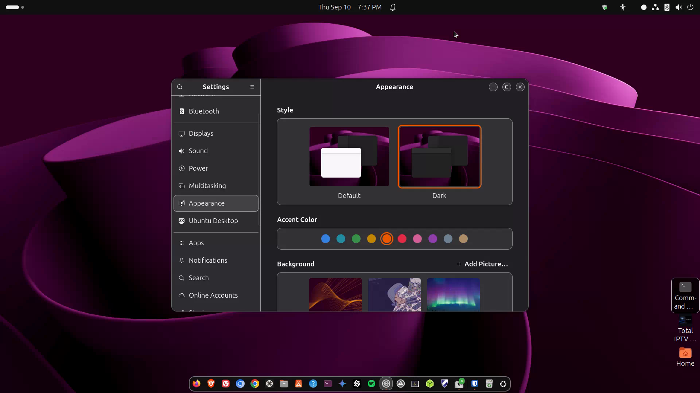
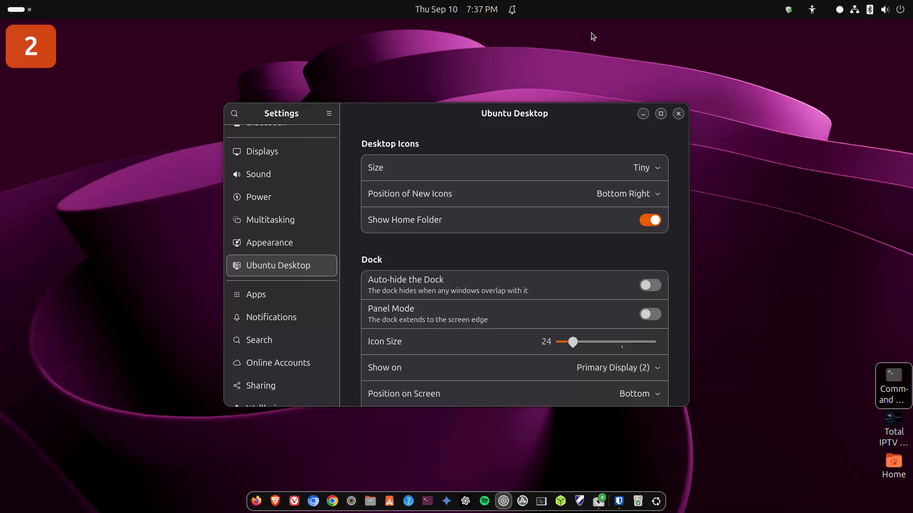

Customizing look
Appearance, wallpaper, accents — including dark Yaru with an orange accent tip.

media/images/16-customize.png with a GTR capture when ready.
Steps
- Open Settings → Appearance (or Ubuntu Desktop on some versions).
- Choose Light or Dark style. Yaru is Ubuntu’s default theme family.
- Set an accent color — orange matches Ubuntu’s classic brand and this tutorial’s accent.
- Change wallpaper: Appearance → background, or right-click the desktop → Change Background.
Dark Yaru + orange Dark style + orange accent looks sharp and keeps the Ubuntu identity. This app and the HTML guide use the same idea.
Want more? GNOME Tweaks and extension sites exist, but keep it light at first — heavy theming can break after upgrades.